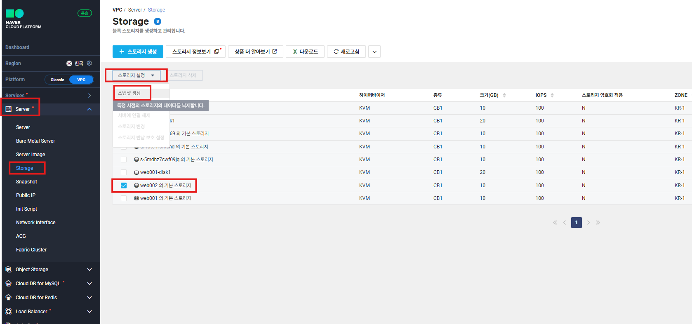
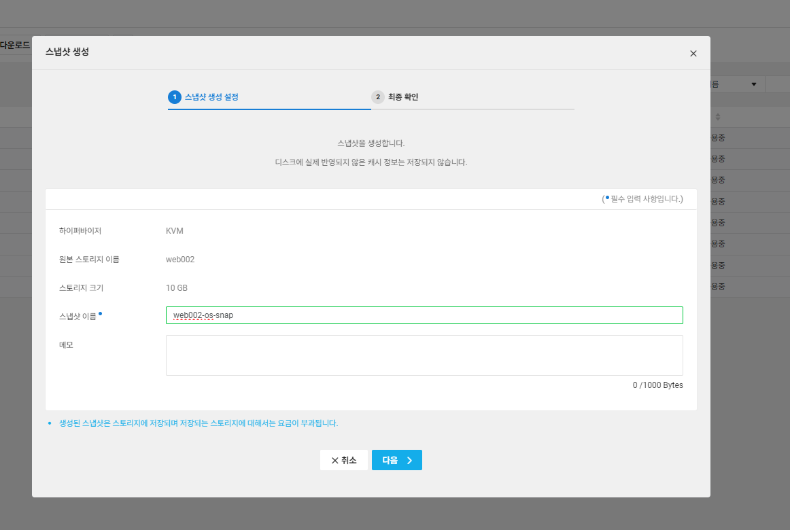
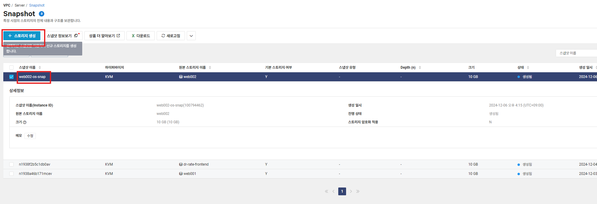
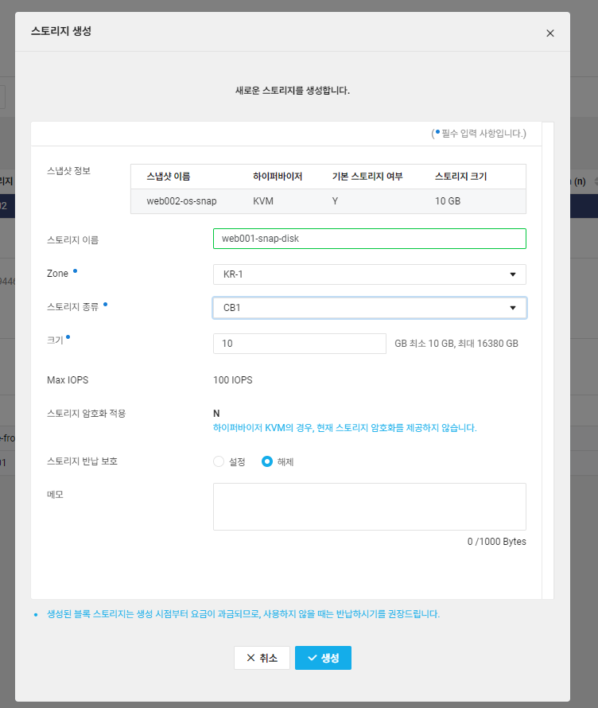
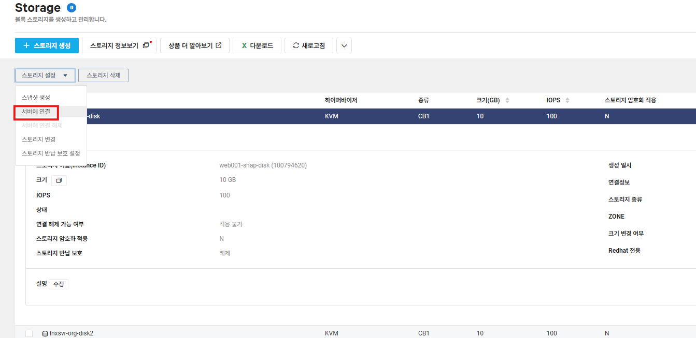
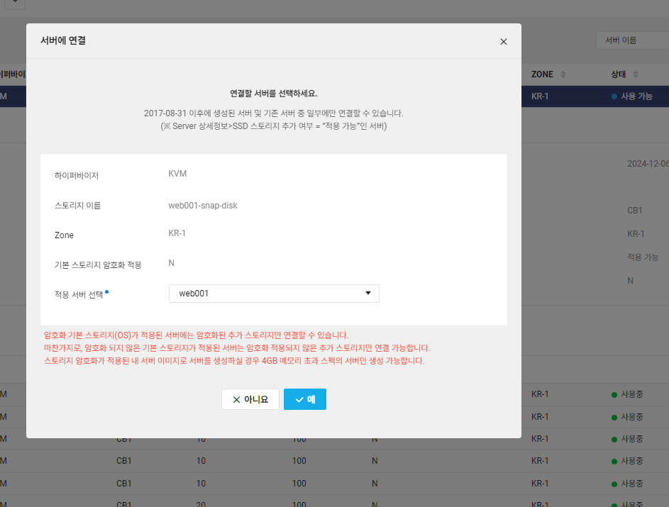
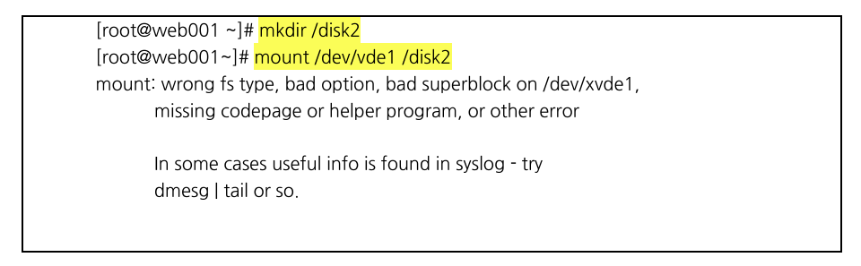
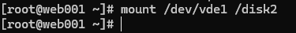
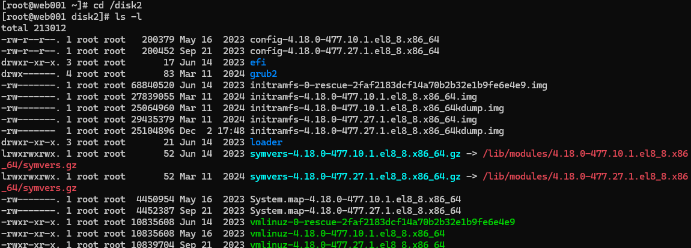

학습 목표
- web002 서버의 OS 영역을 스냅샷으로 생성하여 web001 서버에 마운트
- Server>Storage에서 web002의 기본 스토리지를 선택하고 상단의 스토리지 설정 >스냅샷 생성을선택

- 스냅샷 이름은
web002-os-snap을 입력

- Server >Snapshot에서
web002-os-snap을 선택한 후 상단의 스토리지 생성을 선택


- 스토리지 생성이 완료되면 상단의 ‘스토리지 설정’ 클릭
- ‘서버에 연결’ 클릭하여 적용 서버로 web001 선택


- 스토리지 생성 후 web001 서버에서 마운트 진행
mkdir /disk2 mount /dev/vde1 /disk2- (추가블록스토리지장치파일경로가다를경우에는각자의디스크장치파일로진행)



- mount -완-